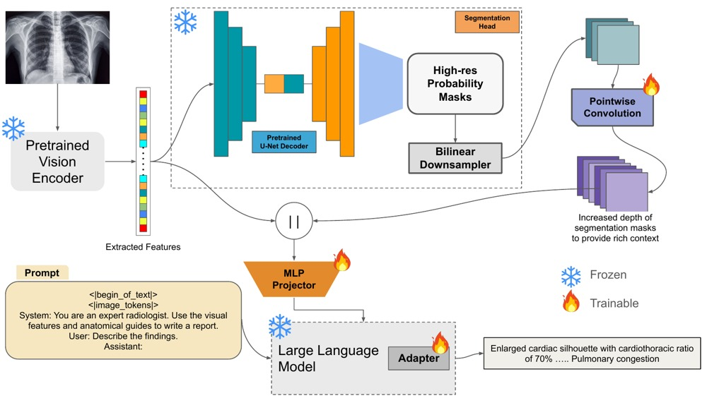
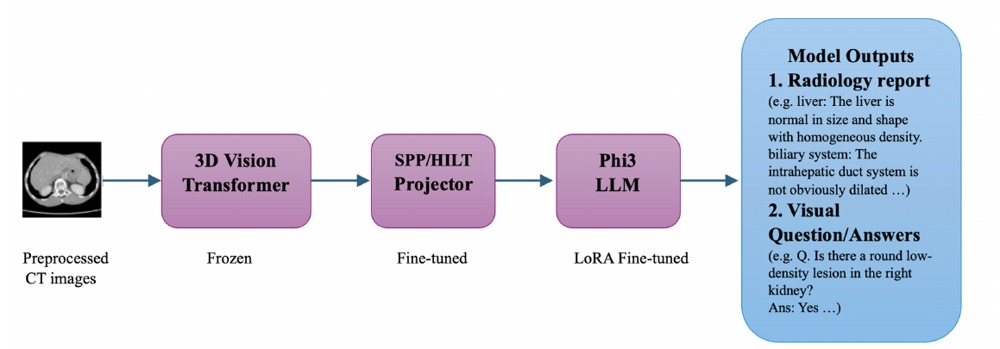

Areeb Ahmad Chaudhry
I'm an AI engineer and researcher from Islamabad, Pakistan. I did my Bachelor's in Software Engineering at NUST SEECS, where I worked in the MachVIS Lab with Dr. Nazia Perwaiz on vision-language models for medical imaging: grounding radiology reports in anatomy [1], and adapting 3D multimodal LLMs to CT scans while training only a fraction of their parameters [2].
Since graduating, I've been building AI systems used in production: vision and language pipelines that turn scanned documents, engineering drawings and large databases into something people can query; AI agents published on the Oracle Marketplace, which Oracle partners now use as templates for their ERP systems; and, as a founding engineer at a US startup, a multi-agent LLM system along with the evaluation pipeline that kept it honest [more].
My research interests are broadly in multimodal learning and AI for health. In particular:
- Trustworthy multimodal models for healthcare: models that combine images, clinical text and other patient data, ground their outputs in evidence, and flag uncertainty instead of guessing [1].
- Efficient adaptation of foundation models: making large models work in new clinical settings and modalities where labelled data and compute are limited [2].
- Evaluation beyond benchmarks: measuring whether models and agents stay reliable once deployed, a gap I kept hitting in industry.
I'm looking for graduate research positions starting Fall 2027. Feel free to reach out if you'd like to chat about any of the above! Here's my CV.
News
- 2025 FeLoRA16-SPP paper at the MICCAI 2025 FLARE Challenge (Task 5).
- 2025 Radixpert, my final year project, published at the 2025 International Conference on Frontiers of Information Technology (FIT), IEEE.
- Jun 2025 Graduated from NUST and joined the MachVIS Lab as a Research Assistant.
- Nov 2024 Placed 3rd out of 40 participants in Devathon, a speed-programming hackathon organised by Devsinc.
Publications

M. A. R. Farooqi, Areeb Ahmad Chaudhry, M. Y. Ghaffar, N. Perwaiz, H. M. Kiani
International Conference on Frontiers of Information Technology (FIT), IEEE, 2025
[paper] [code]
Fusing anatomical segmentation masks with image features grounds a vision-language model's radiology reports, reducing laterality errors (RadCliQ 0.804).

M. Javed, Areeb Ahmad Chaudhry, N. Perwaiz, U. Athar, A. Salahudeen, M. M. Fraz
MICCAI 2025 FLARE Challenge (Task 5), 2025
[paper]
LoRA and a spatial pooling projector adapt a 3D multimodal LLM to CT report generation with about 8% of parameters trainable, reaching a GREEN score of 0.431 across 18 organ systems.
Articles
Technical writing on Medium.
 Deploying your ComfyUI workflows on the Runpod serverlessOct 2025 · Medium
Deploying your ComfyUI workflows on the Runpod serverlessOct 2025 · Medium
 Training WAN2.2 for your character/custom-style ultra-realistic imagesAug 2025 · Medium
Training WAN2.2 for your character/custom-style ultra-realistic imagesAug 2025 · Medium
 LLM as Operating Systems: Agent MemoryJul 2025 · Medium
LLM as Operating Systems: Agent MemoryJul 2025 · Medium
 Inferencing a Persisted Keras Model from S3 using Containerized AWS LambdaMay 2024 · Medium
Inferencing a Persisted Keras Model from S3 using Containerized AWS LambdaMay 2024 · Medium
 Deploying Microservices of a MERN App on GCP using GKE: A Comprehensive GuideJan 2024 · Medium
Deploying Microservices of a MERN App on GCP using GKE: A Comprehensive GuideJan 2024 · Medium
Experience
Details of what I built in each role are on the Industry page.
Education
Awards & Leadership
Awards
Leadership & Service